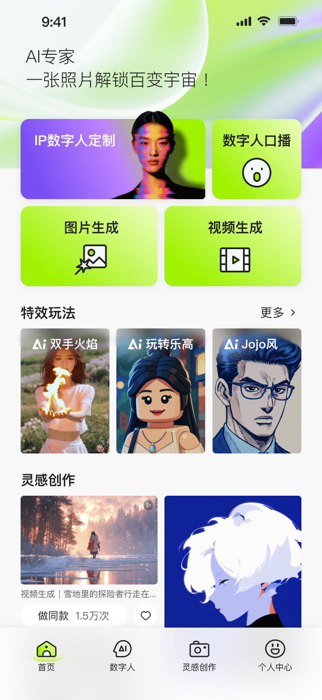
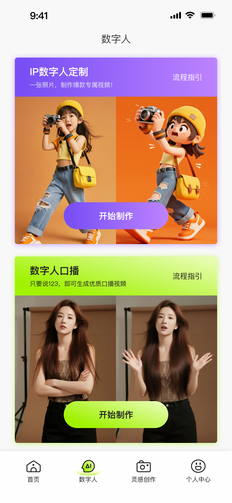
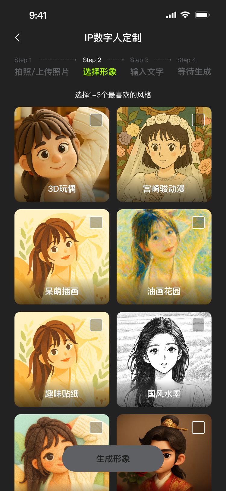
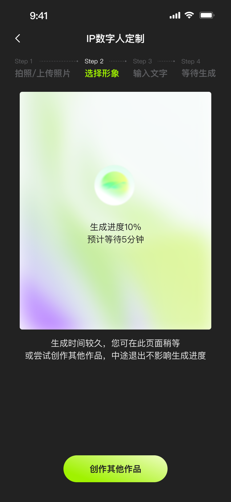
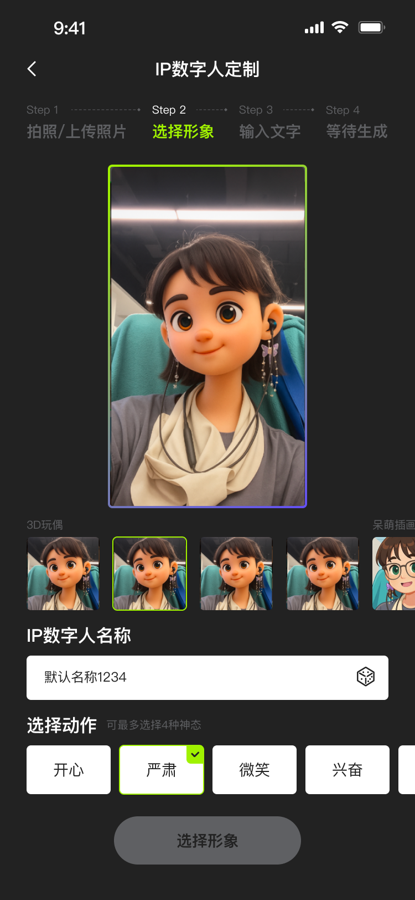
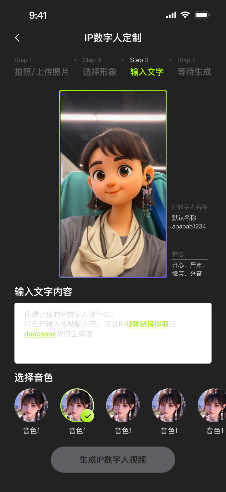
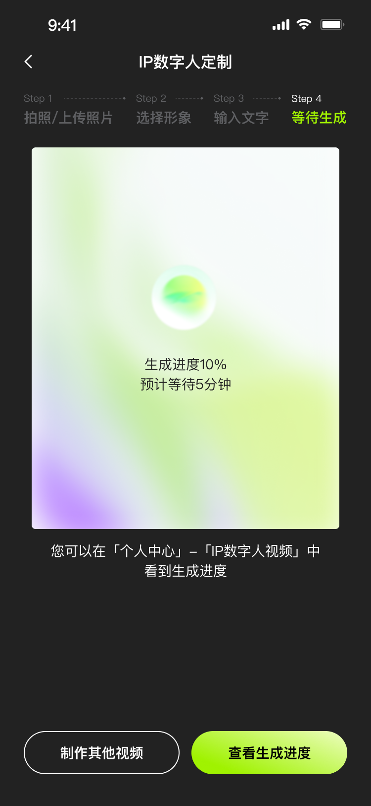
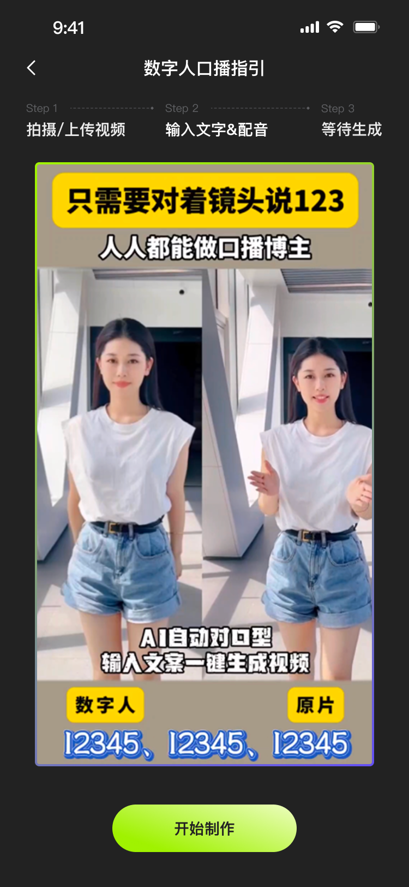
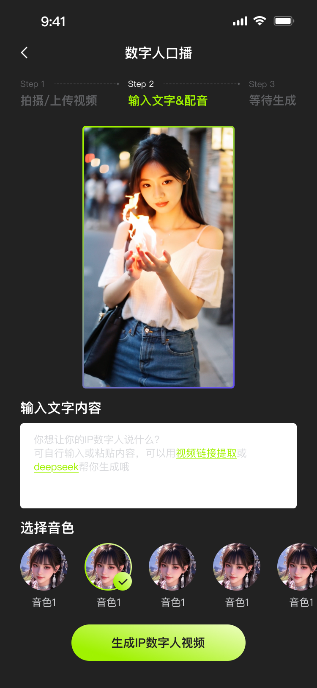
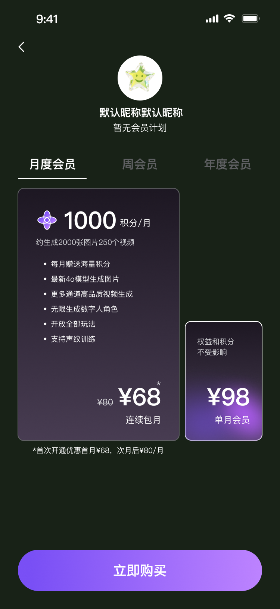

用户画像与动机
目标用户可分为尝鲜型用户、轻量内容创作者和商业推广用户。他们共同关注生成效果、操作成本和是否值得付费。
2025 · 智能创作 · 数字人流程
围绕智能图像生成与数字人视频生产，我将产品梳理为“发现能力、定制数字人、解锁会员权益、生成口播内容”的完整创作链路，重点解决新用户理解成本高、生成流程长、付费权益难感知的问题。


设计挑战
智能图像和数字人产品的难点不在于“功能多”，而在于用户很难判断从哪里开始、需要准备什么、每一步会产出什么。尤其是数字人口播链路，需要连接形象、声音、文案、权益和生成结果，任何一步不清晰都会造成流失。
因此我把项目定义为一个“创作漏斗”：首页负责理解与兴趣激发，数字人定制负责建立个性化资产，会员系统负责解释能力边界，数字人口播负责完成可交付内容。
调研到设计
目标用户可分为尝鲜型用户、轻量内容创作者和商业推广用户。他们共同关注生成效果、操作成本和是否值得付费。
参考智能绘图、模板化修图、数字人视频和会员权益产品后，提炼出“先展示结果，再降低操作门槛，最后解释权益”的转化逻辑。
将复杂流程拆成可理解步骤：选择入口、定制形象、确认权益、输入口播内容、生成结果，避免用户被模型参数和任务状态淹没。
系统框架
页面设计
首页需要快速展示智能图像、数字人和创作模板的能力，让用户先看到结果价值，再进入具体功能。多个横幅状态用于承接不同推广主题和使用场景。
数字人定制是核心资产生成流程。我将它拆成形象入口、风格/参数选择、生成确认和结果查看，让用户知道每一步正在塑造数字人的哪一部分。





数字人口播是最终产出环节。流程需要让用户完成形象选择、文本输入、任务确认和生成结果查看，把智能能力转化为可以发布的口播视频。


会员系统承担“为什么要付费”的解释任务。页面需要清楚呈现生成额度、功能差异和会员权益，让用户理解付费后能解决什么限制。

交互逻辑
用首页案例和横幅先降低理解成本，让用户知道产品能生成图片、数字人和视频，而不是一进入就面对复杂参数。
把生成流程拆成可完成的小任务：选择形象、配置参数、确认权益、输入脚本、生成结果，减少长流程中的不确定感。
会员系统不单独作为商业页面，而是嵌入生成链路中解释限制和权益，帮助用户在需要能力时理解付费价值。